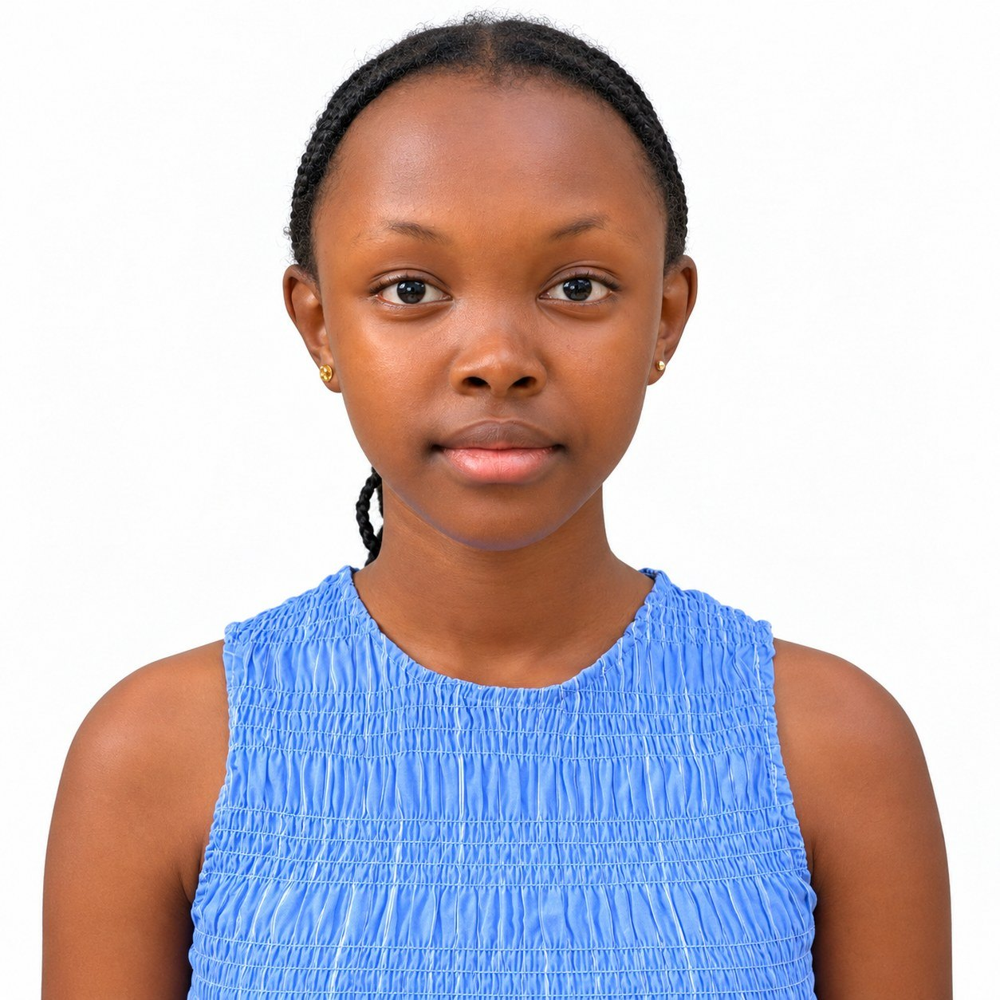

Hey there, I’m
AlanaChelangat
I’m a Kenyan climate justice advocate, author and podcaster. From a school tree nursery to UN climate summits, I help children understand climate change and claim their seat at the table.

Open to speaking & podcast invitations
Founder of Dunia Endelevu. Host of Climate Gumzo with Alana. Author of the Climate Action Adventure Series.
COP28COP29+ COP30 Simulation Keynote in Dubai, panel speaker in Baku, and a full simulation of the COP30 negotiations. Where I’ve spokenAs featured on
Climate change is already shaping children’s schooling, health and safety. I believe we deserve to understand it, and to help decide what happens next.
So I tell stories children can relate to, ask experts the questions kids are curious about, and stand up in rooms where world leaders make decisions, so that children’s realities are part of the plan.


“Children aren’t just victims of climate change. We’re problem solvers.”
What I do
See more
Alana’s Magical Adventure at Mazingira Park
Book one of my Climate Action Adventure Series: a story about conservation, cutting waste and caring for the places we love. I hosted a book signing for young readers at COP29.
Watch, listen & read
All mediaLet’s bring children into the climate conversation.
Keynotes, panels, school visits, podcast collaborations and interviews, in Kenya and around the world. Every request is reviewed by my parent.